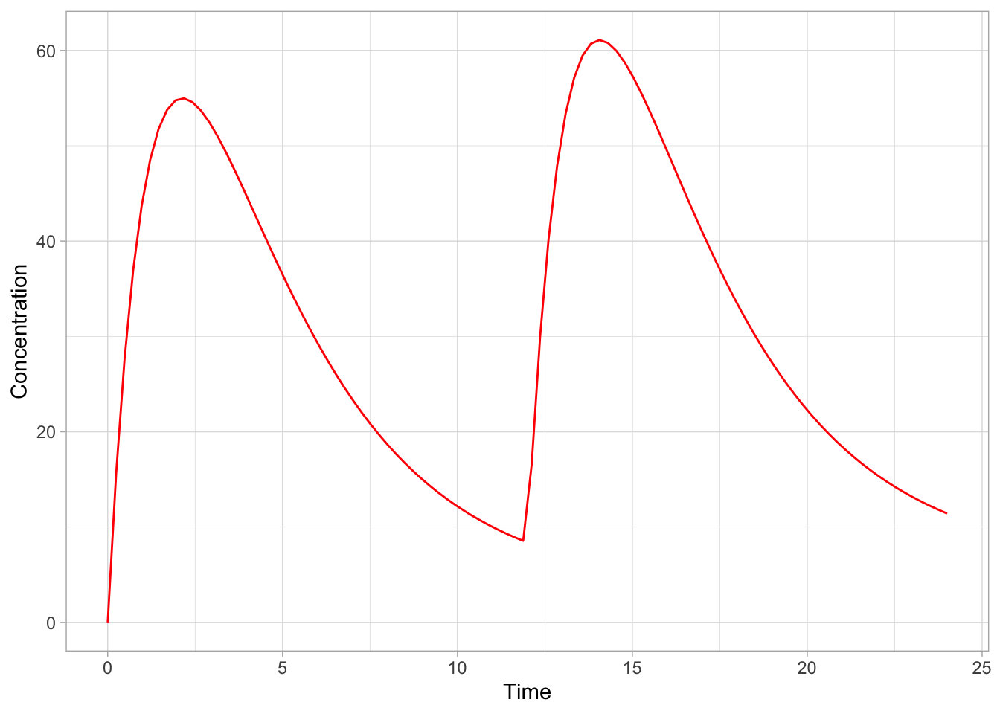
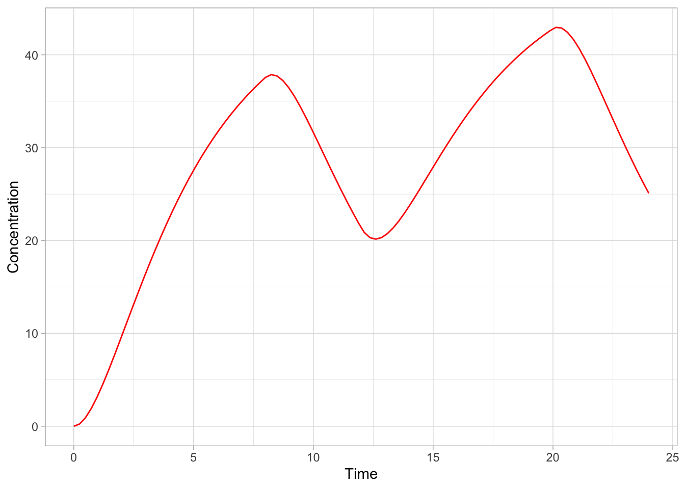
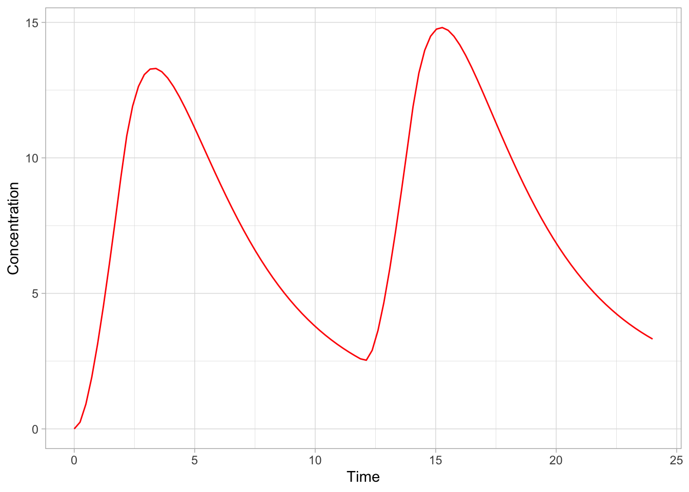
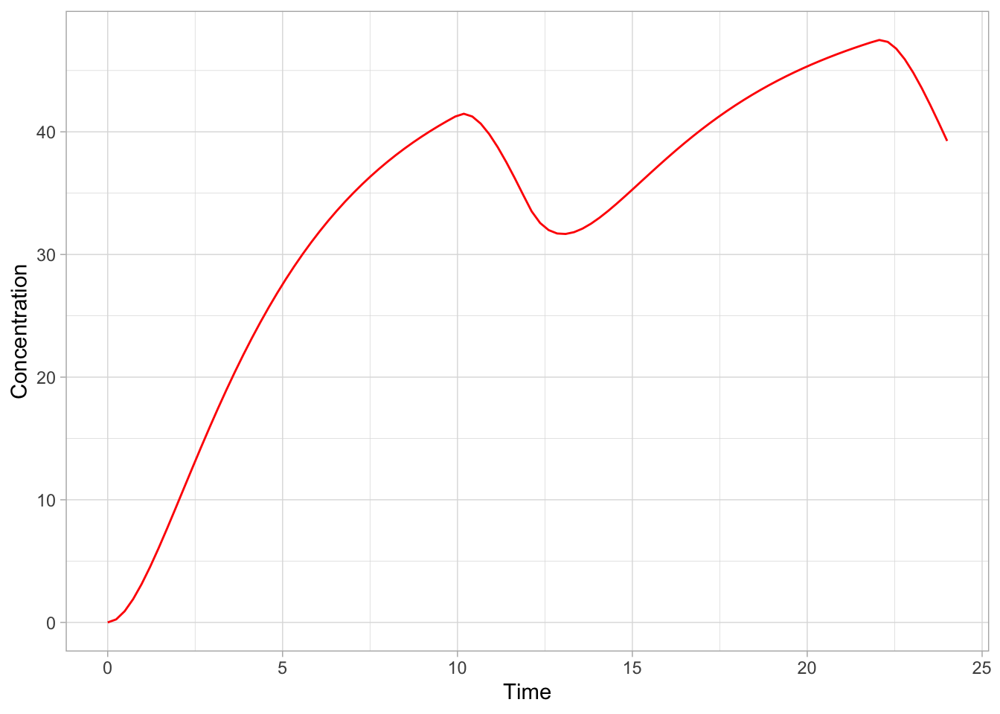
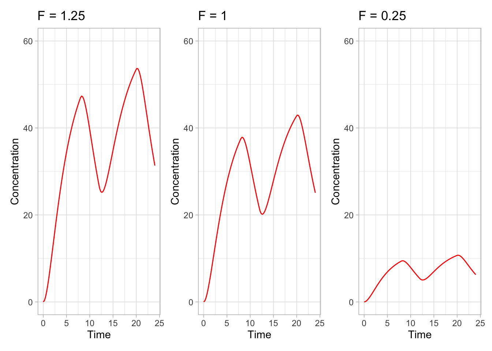
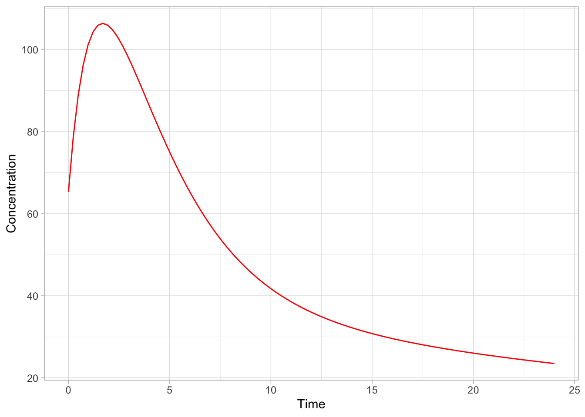
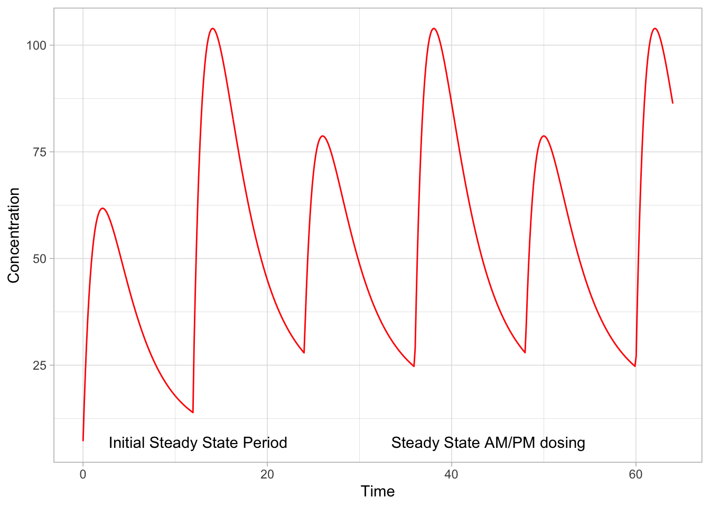
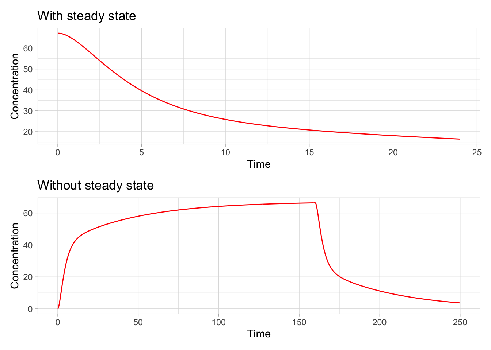
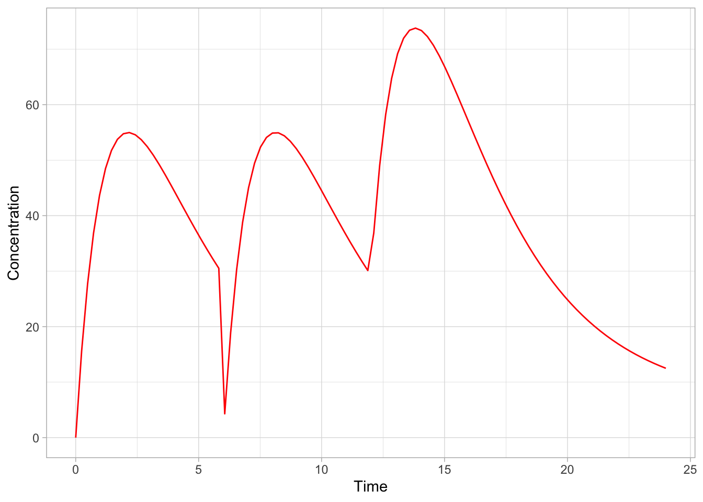
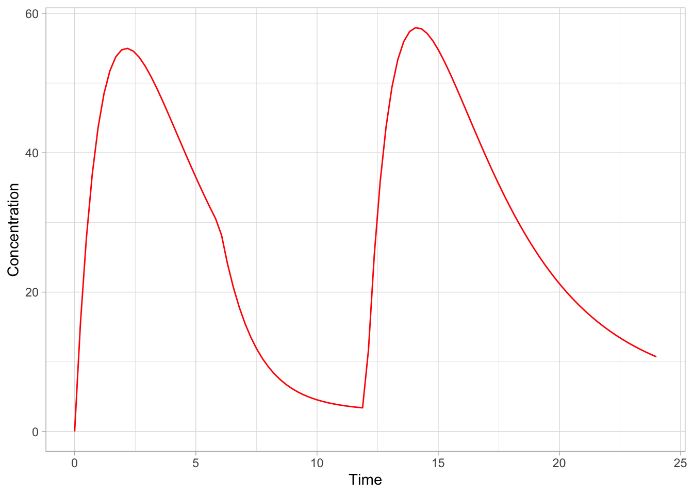

Before we wade into writing models for rxode2, we should first understand events, which describe what happens and when, and provides the model with inputs it can work with. Events in rxode2 are defined in event tables.
6.1.1 Event table structure
rxode2 event tables contain a set of data items which allow fine-grained control of doses and observations over time. Here is a summary.
Data Item
Meaning
Notes
id
Individual identifier
Can be a integer, factor, character, or numeric.
time
Individual time
Numeric for each time.
amt
Dose amount
Positive for doses, zero or NA for observations.
rate
Infusion rate
When specified, the infusion duration will be dur=amt/rate.
Special cases: when rate = -1, rate is modeled; when rate = -2, duration is modeled.
dur
Infusion duration
When specified, the infusion rate will be rate = amt/dur
evid
Event ID
Reserved codes are used in this field. 0=observation; 1=dose; 2=other; 3=reset; 4=reset and dose; 5=replace; 6=multiply; 7=transit
cmt
Compartment
Represents compartment number or name for dose or observation
ss
Steady state flag
Reserved codes are used in this field. 0=non-steady-state; 1=steady state; 2=steady state + prior states
ii
Inter-dose interval
Time between doses defined in addl.
addl
Number of additional doses
Number of doses identical to the current dose, separated by ii.
Those with experience using NONMEM will immediately recognize the convesntions used here. There are some differences, however…
6.1.1.1 Compartments (cmt)
The compartment data item (cmt) can be a string or factor using actual compartment names, as well as a number
You may turn off a compartment using a negative compartment number, or “-cmtName” where cmtName is the compartment name as a string.
The compartment data item (cmt) can be a number. The number of the compartment is defined by the order of appearance of the compartment name in the model. This can be tedious to keep track of, so you can specify compartment numbers easier by listing compartments via cmt(cmtName) in the order you would like at the beginning of the model, where cmtName is the name of the compartment.
6.1.1.2 Duration (dur) and rate (rate) of infusion
The duration data item, dur, specifies the duration of infusions.
Bioavailability changes will change the rate of infusion, since dur and amt are fixed in the input data.
Similarly, when specifying rate/amt for an infusion, changing the bioavailability will change the infusion duration, since rate and amt are fixed in the input data.
6.1.1.3 Event IDs (evid)
NONMEM-style events are supported (0: Observation, 1: Dose, 2: Other, 3: Reset, 4: Reset and dose).
A number of additional event types are also included:
Replace events (evid=5): This replaces the amount in a compartment with the value specified in the amt column. This is equivalent to deSolve=replace.
Multiply events (evid=6): This multiplies the value in the compartment with the value specified by the amt column. This is equivalent to deSolve=multiply.
Transit or phantom event (evid=7): This puts the dose in the dose() function and calculates time since last dose (tad()) but doesn’t actually put the dose in the compartment. This allows the transit() function to be applied to the compartment easily.
When returning the rxode2 solved dataset, there are a few additional event IDs (evid) that you may encounter, depending on the solving options you have used.
evid = -1 indicates when a modeled rate ends (corresponds to rate = -1 in the event table).
evid = -2 indicates when a modeled duration ends (corresponds to rate = -2 in the event table).
evid = -10 indicates when a rate-specified zero-order infusion ends (corresponds to rate > 0 in the event table).
evid = -20 indicates when a dur-specified zero-order infusion ends (corresponds to dur > 0 in the event table).
evid = 101, 102, 103, … indicate modeled times (mtime) corresponding to the 1, 2, 3, … modeled times.
These can only be accessed when solving with the option combination addDosing=TRUE and subsetNonmem=FALSE. If you want to see the classic EVID equivalents you can use addDosing=NA.
6.1.1.4 Other notes
evid can be the classic RxODE style (described here) or the NONMEM-style evid we have described above.
Dependent variable (DV) is not required; rxode2 is a ODE solving framework and doesn’t need it.
A flag for missing dependent variable (MDV) is not required; it is captured in evid.
Instead of NONMEM-compatible data, deSolve-compatible data-frames can also be accepted.
6.1.2 Dosing
6.1.2.1 Bolus and additive doses
A bolus dose is the default type of dose in rxode2 and only requires amt. For setting up event tables, we use the convenience function et(), as in the example below. Notice as well how we are using piping from the magrittr package (you don’t need to, but it makes things a lot easier to type and read).
Here’s an example: we’ll use a simple PK model for illustrative purposes (we’ll explain how it works in detail later on).
library(tidyverse)
── Attaching core tidyverse packages ──────────────────────── tidyverse 2.0.0 ──
✔ dplyr 1.1.3 ✔ readr 2.1.4
✔ forcats 1.0.0 ✔ stringr 1.5.0
✔ ggplot2 3.4.4 ✔ tibble 3.2.1
✔ lubridate 1.9.3 ✔ tidyr 1.3.0
✔ purrr 1.0.2
── Conflicts ────────────────────────────────────────── tidyverse_conflicts() ──
✖ dplyr::filter() masks stats::filter()
✖ dplyr::lag() masks stats::lag()
ℹ Use the conflicted package (<http://conflicted.r-lib.org/>) to force all conflicts to become errors
library(ggplot2)library(rxode2)
rxode2 2.0.14 using 1 threads (see ?getRxThreads)
no cache: create with `rxCreateCache()`
========================================
rxode2 has not detected OpenMP support and will run in single-threaded mode
This is a Mac. Please read https://mac.r-project.org/openmp/
========================================
mod1 <-function() {ini({# central compartment KA =0.294# /h CL =18.6# L/h V2 =40.2# L# peripheral compartment Q =10.5# L/h V3 =297# L fdepot <-1 })model({ C2 <- centr/V2 # concentration in the central compartment C3 <- peri/V3 # concentration in the peripheral compartment d/dt(depot) <--KA*depot # depot compartment d/dt(centr) <- KA*depot - CL*C2 - Q*C2 + Q*C3 # central compartment d/dt(peri) <- Q*C2 - Q*C3 # peripheral compartmentf(depot) <- fdepot # set bioavailability })}
We’ll give 3 doses of 10000 mg, every 12 hours until 24 h, and 100 equally-spaced observations between 0 and 24 hours. We also specify time units of “hours”, which adds this to the output object specification.
ev <-et(timeUnits="hr") %>%# using hourset(amt=10000, ii=12, until=24) %>%# 10000 mg, 2 doses spaced by 12 hourset(seq(0, 24, length.out=100)) # 100 observations between 0 and 24 h, equally spacedev
── EventTable with 101 records ──
1 dosing records (see x$get.dosing(); add with add.dosing or et)
100 observation times (see x$get.sampling(); add with add.sampling or et)
multiple doses in `addl` columns, expand with x$expand(); or etExpand(x)
── First part of x: ──
# A tibble: 101 × 5
time amt ii addl evid
<dbl> <dbl> <dbl> <int> <evid>
1 0 NA NA NA 0:Observation
2 0 10000 12 2 1:Dose (Add)
3 0.242 NA NA NA 0:Observation
4 0.485 NA NA NA 0:Observation
5 0.727 NA NA NA 0:Observation
6 0.970 NA NA NA 0:Observation
7 1.21 NA NA NA 0:Observation
8 1.45 NA NA NA 0:Observation
9 1.70 NA NA NA 0:Observation
10 1.94 NA NA NA 0:Observation
# ℹ 91 more rows
ℹ parameter labels from comments will be replaced by 'label()'
using C compiler: ‘Apple clang version 15.0.0 (clang-1500.0.40.1)’
using SDK: ‘’
ld: warning: -single_module is obsolete
ld: warning: -multiply_defined is obsolete

6.1.2.2 Infusions
rxode2 supports several different kinds of infusion.
Constant rate infusion (using rate)
Constant duration infusion (using dur)
Estimated rate of infusion
Estimated duration of infusion
6.1.2.2.1 Constant infusions
There are two ways to specify an infusion in rxode2. The first is to use the dur field. Here we specify an infusion given over 8 hours.
ev <-et(timeUnits="hr") %>%et(amt=10000, ii=12, until=24, dur=8) %>%et(seq(0, 24, length.out=100))ev
── EventTable with 101 records ──
1 dosing records (see x$get.dosing(); add with add.dosing or et)
100 observation times (see x$get.sampling(); add with add.sampling or et)
multiple doses in `addl` columns, expand with x$expand(); or etExpand(x)
── First part of x: ──
# A tibble: 101 × 6
time amt ii addl evid dur
<dbl> <dbl> <dbl> <int> <evid> <rate/dur>
1 0 NA NA NA 0:Observation NA
2 0 10000 12 2 1:Dose (Add) 8
3 0.242 NA NA NA 0:Observation NA
4 0.485 NA NA NA 0:Observation NA
5 0.727 NA NA NA 0:Observation NA
6 0.970 NA NA NA 0:Observation NA
7 1.21 NA NA NA 0:Observation NA
8 1.45 NA NA NA 0:Observation NA
9 1.70 NA NA NA 0:Observation NA
10 1.94 NA NA NA 0:Observation NA
# ℹ 91 more rows
ℹ parameter labels from comments will be replaced by 'label()'
using C compiler: ‘Apple clang version 15.0.0 (clang-1500.0.40.1)’
using SDK: ‘’
ld: warning: -single_module is obsolete
ld: warning: -multiply_defined is obsolete

We could, alternatively, specify rate instead.
ev <-et(timeUnits="hr") %>%et(amt=10000, ii=12, until=24, rate=10000/8) %>%et(seq(0, 24, length.out=100))ev
── EventTable with 101 records ──
1 dosing records (see x$get.dosing(); add with add.dosing or et)
100 observation times (see x$get.sampling(); add with add.sampling or et)
multiple doses in `addl` columns, expand with x$expand(); or etExpand(x)
── First part of x: ──
# A tibble: 101 × 6
time amt rate ii addl evid
<dbl> <dbl> <rate/dur> <dbl> <int> <evid>
1 0 NA NA NA NA 0:Observation
2 0 10000 1250 12 2 1:Dose (Add)
3 0.242 NA NA NA NA 0:Observation
4 0.485 NA NA NA NA 0:Observation
5 0.727 NA NA NA NA 0:Observation
6 0.970 NA NA NA NA 0:Observation
7 1.21 NA NA NA NA 0:Observation
8 1.45 NA NA NA NA 0:Observation
9 1.70 NA NA NA NA 0:Observation
10 1.94 NA NA NA NA 0:Observation
# ℹ 91 more rows
ℹ parameter labels from comments will be replaced by 'label()'
As you can see, we get the same result whichever way we do it. Where we need to pay attention is bioavailability (F). If we change F, the infusion is changed.
When we apply rate, a bioavailability decrease decreases the infusion duration. For instance:
# other parameters are as beforeother_params <-c(KA =0.294, CL =18.6, V2 =40.2, Q =10.5, V3 =297)rxSolve(mod1, ev, params =c(other_params, fdepot=0.25)) %>%ggplot(aes(time, C2)) +geom_line(col="red") +xlab("Time") +ylab("Concentration") +theme_light()
ℹ parameter labels from comments will be replaced by 'label()'

Similarly, increasing the bioavailability increases the infusion duration.
ℹ parameter labels from comments will be replaced by 'label()'

The rationale for this behavior is that the rate and amt variables are specified by the event table, so the only thing that can change with a bioavailability increase is the duration of the infusion. Similarly, when specifying the amt and dur components in the event table, bioavailability changes affect the rate of infusion.
ev <-et(timeUnits="hr") %>%et(amt=10000, ii=12,until=24, dur=8) %>%et(seq(0, 24, length.out=100))
Looking at the two approaches side by side, we can clearly see the differences in the depot compartment.
ℹ parameter labels from comments will be replaced by 'label()'
## Use patchwork syntax to combine plotsp1 + p0 + p2

6.1.2.3 Steady state
6.1.2.3.1 Dosing to staedy state
When the steady-state (ss) flag is set, doses are solved until steady state is reached with a constant inter-dose interval.
ev <-et(timeUnits="hr") %>%et(amt=10000, ii=6, ss=1) %>%et(seq(0, 24, length.out=100))ev
── EventTable with 101 records ──
1 dosing records (see x$get.dosing(); add with add.dosing or et)
100 observation times (see x$get.sampling(); add with add.sampling or et)
── First part of x: ──
# A tibble: 101 × 5
time amt ii evid ss
<dbl> <dbl> <dbl> <evid> <int>
1 0 NA NA 0:Observation NA
2 0 10000 6 1:Dose (Add) 1
3 0.242 NA NA 0:Observation NA
4 0.485 NA NA 0:Observation NA
5 0.727 NA NA 0:Observation NA
6 0.970 NA NA 0:Observation NA
7 1.21 NA NA 0:Observation NA
8 1.45 NA NA 0:Observation NA
9 1.70 NA NA 0:Observation NA
10 1.94 NA NA 0:Observation NA
# ℹ 91 more rows
ℹ parameter labels from comments will be replaced by 'label()'

6.1.2.3.2 Steady state for complex dosing
By using the ss=2 flag, the super-positioning principle in linear kinetics can be applied to set up nonstandard dosing to steady state. In thise xample, we’re giving different deses in mornings and evenings.
id low time high cmt amt rate ii addl evid ss dur
1 1 NA 0 NA (default) 10000 0 24 0 1 1 0
2 1 NA 12 NA (default) 15000 0 24 0 1 2 0
3 1 NA 24 NA (default) 10000 0 24 3 1 0 0
4 1 NA 36 NA (default) 15000 0 24 3 1 0 0
rxSolve(mod1, ev,maxsteps=10000) %>%ggplot(aes(time, C2)) +geom_line(col="red") +xlab("Time") +ylab("Concentration") +theme_light() +annotate("text", x=12.5, y=7,label="Initial Steady State Period") +annotate("text", x=44, y=7,label="Steady State AM/PM dosing")
ℹ parameter labels from comments will be replaced by 'label()'

As you can see, it takes a full dose cycle to reach true steady state.
6.1.2.3.3 Steady state for constant infusion or zero order processes
The last type of steady state dosing that rxode2 supports is constant infusion rate. This can be specified as follows:
No inter-dose interval: ii=0
A steady state dose: ss=1
Either a positive rate (rate>0) or an estimated rate (rate=-1)
A zero dose: amt=0
Once the steady-state constant infusion is achieved, the infusion is turned off.
Note that rate=-2, in which we model the duration of infusion, doesn’t really make much sense in this situation, since we are solving the infusion until steady state is reached. The duration is specified by the steady state solution.
Also note that bioavailability changes on this steady state infusion also do not make sense, because they neither change the rate, nor the duration of the steady state infusion. Modeled bioavailability on this type of dosing event is therefore ignored by rxode2.
ℹ parameter labels from comments will be replaced by 'label()'
library(patchwork)p1 / p2

6.1.2.4 Reset Events
Reset events are implemented by specifying evid=3 or evid=reset, for reset, or evid=4 for reset-and-dose.
Let’s see what happens in this system when we reset it at 6 hours post-dose.
ev <-et(timeUnits="hr") %>%et(amt=10000, ii=12, addl=3) %>%et(time=6, evid=reset) %>%et(seq(0, 24, length.out=100))ev
── EventTable with 102 records ──
2 dosing records (see x$get.dosing(); add with add.dosing or et)
100 observation times (see x$get.sampling(); add with add.sampling or et)
multiple doses in `addl` columns, expand with x$expand(); or etExpand(x)
── First part of x: ──
# A tibble: 102 × 5
time amt ii addl evid
<dbl> <dbl> <dbl> <int> <evid>
1 0 NA NA NA 0:Observation
2 0 10000 12 3 1:Dose (Add)
3 0.242 NA NA NA 0:Observation
4 0.485 NA NA NA 0:Observation
5 0.727 NA NA NA 0:Observation
6 0.970 NA NA NA 0:Observation
7 1.21 NA NA NA 0:Observation
8 1.45 NA NA NA 0:Observation
9 1.70 NA NA NA 0:Observation
10 1.94 NA NA NA 0:Observation
# ℹ 92 more rows
── EventTable with 102 records ──
2 dosing records (see x$get.dosing(); add with add.dosing or et)
100 observation times (see x$get.sampling(); add with add.sampling or et)
multiple doses in `addl` columns, expand with x$expand(); or etExpand(x)
── First part of x: ──
# A tibble: 102 × 5
time amt ii addl evid
<dbl> <dbl> <dbl> <int> <evid>
1 0 NA NA NA 0:Observation
2 0 10000 12 3 1:Dose (Add)
3 0.242 NA NA NA 0:Observation
4 0.485 NA NA NA 0:Observation
5 0.727 NA NA NA 0:Observation
6 0.970 NA NA NA 0:Observation
7 1.21 NA NA NA 0:Observation
8 1.45 NA NA NA 0:Observation
9 1.70 NA NA NA 0:Observation
10 1.94 NA NA NA 0:Observation
# ℹ 92 more rows
ℹ parameter labels from comments will be replaced by 'label()'

Here, we give the most recent dose again when we reset the system. Admittedly, these types of events have limited applicability in most circumstances but can occasionally be useful.
6.1.2.5 Turning off compartments
You may also turn off a compartment, which gives the following kind of result (in this example, we’re turning off the depot compartment at 6 hours post-dose). This can be useful when one needs to model things like gastric emptying.
── EventTable with 102 records ──
2 dosing records (see x$get.dosing(); add with add.dosing or et)
100 observation times (see x$get.sampling(); add with add.sampling or et)
multiple doses in `addl` columns, expand with x$expand(); or etExpand(x)
── First part of x: ──
# A tibble: 102 × 6
time cmt amt ii addl evid
<dbl> <chr> <dbl> <dbl> <int> <evid>
1 0 (obs) NA NA NA 0:Observation
2 0 (default) 10000 12 3 1:Dose (Add)
3 0.242 (obs) NA NA NA 0:Observation
4 0.485 (obs) NA NA NA 0:Observation
5 0.727 (obs) NA NA NA 0:Observation
6 0.970 (obs) NA NA NA 0:Observation
7 1.21 (obs) NA NA NA 0:Observation
8 1.45 (obs) NA NA NA 0:Observation
9 1.70 (obs) NA NA NA 0:Observation
10 1.94 (obs) NA NA NA 0:Observation
# ℹ 92 more rows
ℹ parameter labels from comments will be replaced by 'label()'

In this case, the depot is turned off, and the depot compartment concentrations are set to the initial values, but the other compartments are not. When another dose is administered to the depot, it is turned back on.
Note that a dose to a compartment only turns the compartment that was dosed back on. Any others that might have been turned off, stay off. Turning compartments back on can be achieved by administering a dose of zero or by supplying an evid=2 record for that compartment.